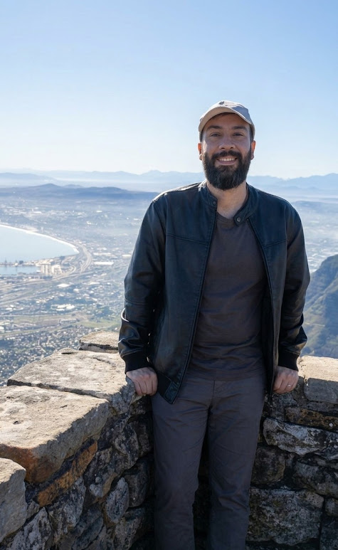

Sou um desenvolvedor apaixonado por tecnologia, com sólida experiência em Python e bons conhecimentos em JavaScript.
Minha trajetória é focada em Engenharia de Dados e desenvolvimento de software, com passagens significativas pelos setores de marketing e fiscal. Tenho expertise em criar soluções para redução de custos, automação de tarefas manuais e otimização da eficiência em processos de dados.
Para além do código, valorizo muito o equilíbrio pessoal. Sou entusiasta de viagens, cinema, animes e games — tanto que montei minha própria Steam Machine caseira. Divido minha rotina com minha esposa e nossos dois gatos (um deles resgatado recentemente). Acredito que a curiosidade que me leva a explorar novos países é a mesma que me move a aprender novas tecnologias.